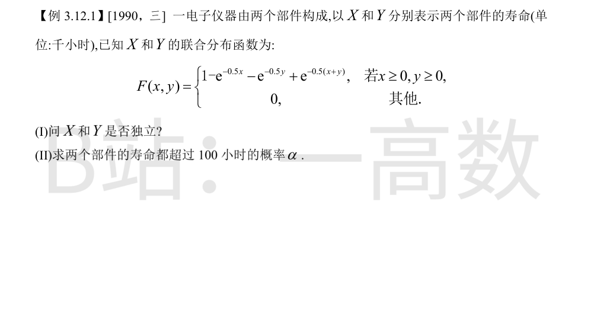
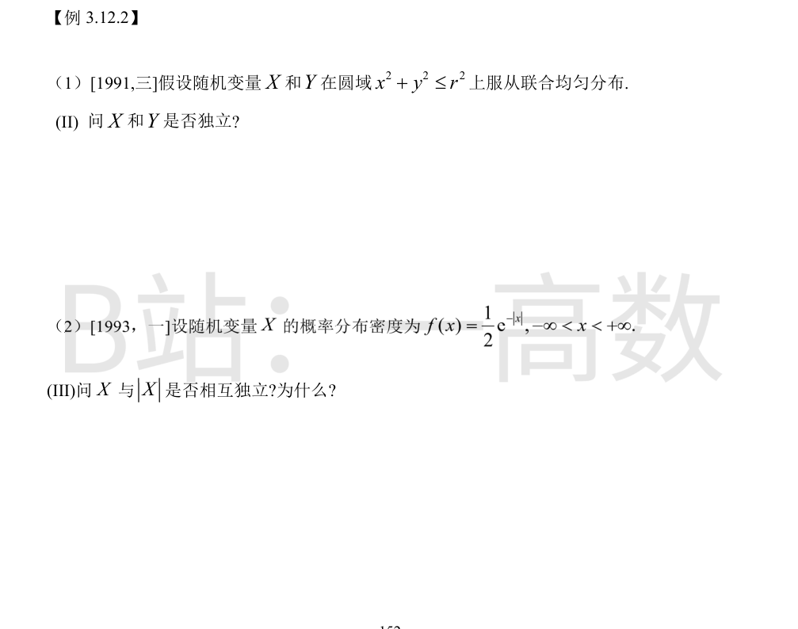
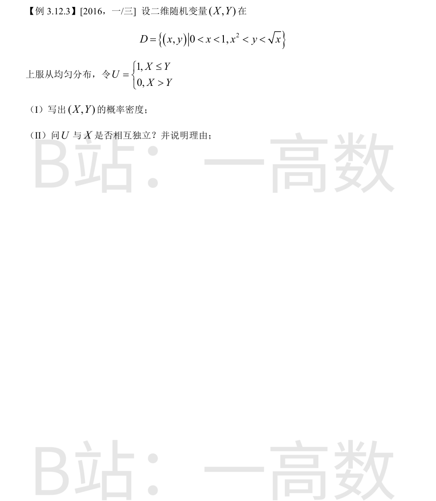

求边缘分布函数：
$$F_X(x)=F(x,+\infty)=1-e^{-0.5x}\ (x\ge0),\qquad F_Y(y)=F(+\infty,y)=1-e^{-0.5y}\ (y\ge0).$$
对一切 x,y（含 x<0 或 y<0 时两边均为 0）都有
$$F(x,y)=\left(1-e^{-0.5x}\right)\left(1-e^{-0.5y}\right)=F_X(x)F_Y(y),$$
故 X 与 Y 相互独立，且均服从参数 0.5 的指数分布。
X,Y 单位为千小时，100 小时 = 0.1 千小时。由独立性：
$$\alpha=P\{X>0.1,\,Y>0.1\}=P\{X>0.1\}\,P\{Y>0.1\}=e^{-0.5\times0.1}\cdot e^{-0.5\times0.1}=e^{-0.1}\approx0.905.$$

$$f(x,y)=\begin{cases}\dfrac{1}{\pi r^2}, & x^2+y^2\le r^2\\ 0, & \text{其他}\end{cases}$$
边缘密度：
$$f_X(x)=\int_{-\sqrt{r^2-x^2}}^{\sqrt{r^2-x^2}}\frac{dy}{\pi r^2}=\frac{2\sqrt{r^2-x^2}}{\pi r^2},\quad |x|\le r,$$
f_Y(y) 同理。
在 (0,0) 处：f_X(0)f_Y(0)=\frac{4r^2}{\pi^2r^4}=\frac{4}{\pi^2r^2}\ne\frac{1}{\pi r^2}=f(0,0)，即 f(x,y)\ne f_X(x)f_Y(y)。
故 X 与 Y 不独立（几何原因：均匀分布的支撑是圆盘而非矩形乘积区域）。
取事件 A=\{X>1\}，B=\{|X|\le1\}，则 A\cap B=\varnothing，故 P(AB)=0。
但 P(A)=\int_1^{+\infty}\frac12e^{-x}\,dx=\frac{1}{2e}>0，P(B)=\int_{-1}^{1}\frac12e^{-|x|}\,dx=\int_0^1 e^{-x}dx=1-\frac1e>0，
故 P(A)P(B)=\frac{1}{2e}\left(1-\frac1e\right)>0\ne P(AB)。
P(AB)\ne P(A)P(B)，即事件 \{X>1\} 与 \{|X|\le1\} 不独立，故 X 与 |X| 不相互独立。

$$S=\int_0^{1}\left(\sqrt{x}-x^2\right)dx=\frac23-\frac13=\frac13.$$
故 f(x,y)=\frac{1}{S}=3（(x,y)\in D），其他处为 0。
$$P\{U=1\}=P\{X\le Y\}=3\int_0^{1}(\sqrt{x}-x)\,dx=3\left(\frac23-\frac12\right)=\frac12.$$
若 U 与 X 独立，则对任意 0<t<1 应有 P\{U=1,\,X\le t\}=\frac12 P\{X\le t\}。计算：
$$P\{U=1,\,X\le t\}=3\int_0^{t}(\sqrt{x}-x)\,dx=2t^{3/2}-\frac32t^2,$$
$$P\{X\le t\}=3\int_0^{t}(\sqrt{x}-x^2)\,dx=2t^{3/2}-t^3.$$
取 t=\frac12：左边 =2\cdot\frac{1}{2\sqrt2}-\frac38=\frac{\sqrt2}{2}-\frac38\approx0.332；右边 =\frac12\left(\frac{\sqrt2}{2}-\frac18\right)\approx0.291，二者不等。
故 U 与 X 不相互独立。（等价地：P\{U=1\mid X=x\}=\frac{\sqrt{x}-x}{\sqrt{x}-x^2} 随 x 变化而非常数 1/2。）